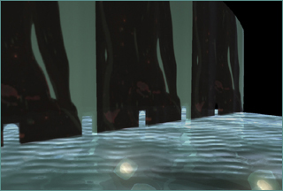
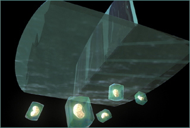
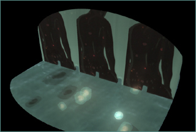
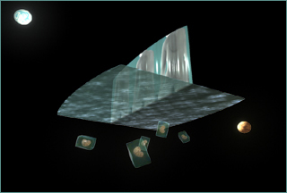
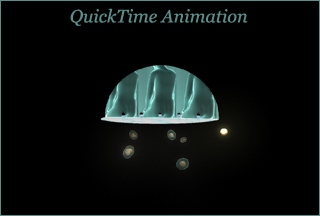

A virtual world created by Haru Ji
jiharu@mat.ucsb.edu, Fall 2005






Click to watch the movie
A Fluctuated Sanctum
Water, Light, Goddess, Egg, Womb, Circle and Square.
Every object in this world changes, moves and relates to each other visually and symbolically.
Every object is potentially the world itself.
A new space is created based on an old memory of the world.
© Jiharu 2005